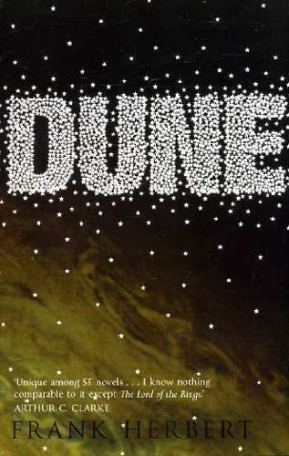

"Dune"

- Read on 2014-11-15
- Rating: ▲▲▲△△
- Format: Audio (21 hours 2 minutes)
I probably read this two decades too late, so early readers of this book will be disappointed by my review. It just wasn't that great.
Despite the admittedly great world-building (the great descriptions of the people, cultures, landscape, and all of those contributing details), I wasn't ever truly gripped. I felt like I knew the outcome right as the book started, and wasn't ever attached to any of the characters. Maybe the reward of this book isn't the characters, but the world itself. Still, it just didn't do it for me. Don't tell Mike I said that.